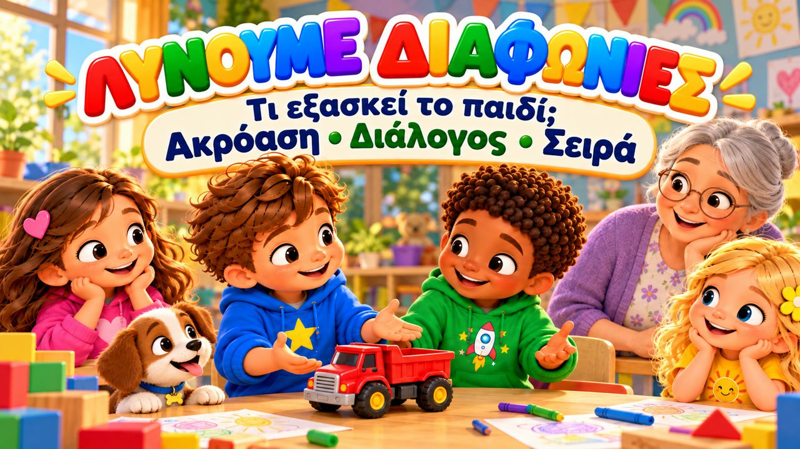
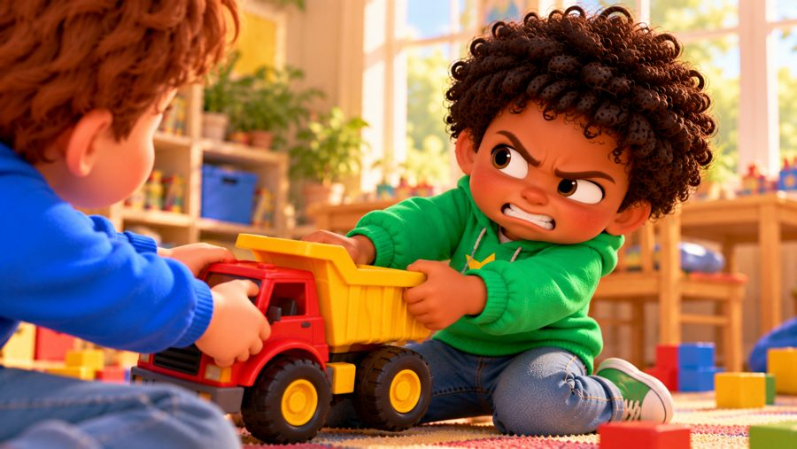
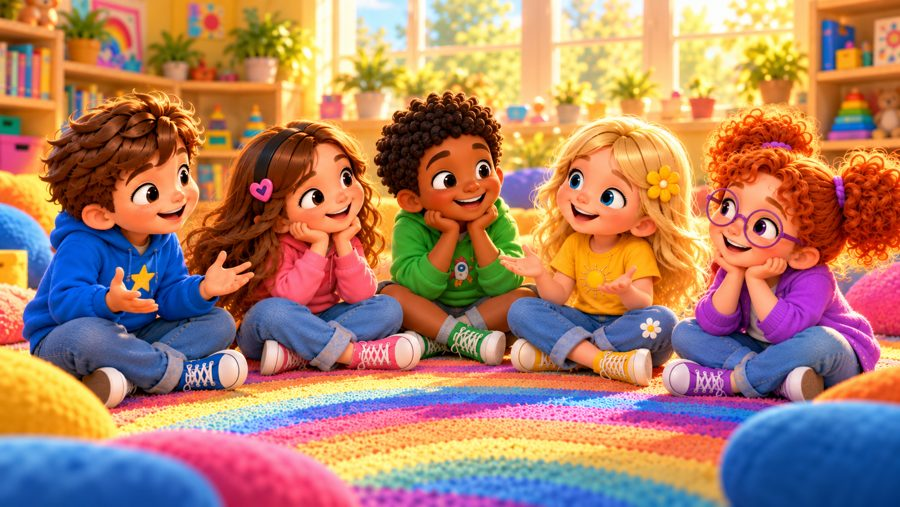
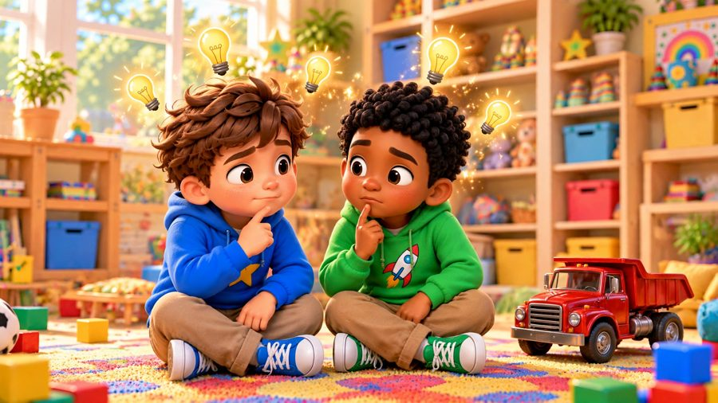

Ας το συζητήσουμε!
Ένα τραγούδι για το πώς λύνουμε τις διαφωνίες! 💬 Τραγουδήστε με τον Μαξ, τη Μία, τον Τζέι, τη Λίλη, τη Ρόζα και τον σκυλάκο Μπάντι, που μαθαίνουν να ΣΤΑΜΑΤΟΥΝ, να ΑΚΟΥΝ και να ΤΟ ΣΥΖΗΤΟΥΝ — και να βρίσκουν μια λύση που αρέσει σε όλους.
Στο «Ας το Συζητήσουμε!» ο Μαξ κι ο Τζέι θέλουν το ίδιο κόκκινο φορτηγάκι, κι η Ρόζα με τη Λίλη θέλουν διαφορετικό παιχνίδι — αντί να αρπάξουν ή να φωνάξουν, λένε τι χρειάζονται, ακούνε ο ένας τον άλλον και βρίσκουν ένα δίκαιο σχέδιο. Με στίχους-καραόκε στην οθόνη, για παιδιά 3–8 ετών, στο σπίτι, στο νηπιαγωγείο και στα Εργαστήρια Δεξιοτήτων.

▶💡 Γιατί είναι σημαντικό: Λύνω διαφωνίες
Οι διαφωνίες είναι φυσιολογικό κομμάτι του να μεγαλώνεις — σημασία έχει πώς τις λύνουν τα παιδιά. Όταν μαθαίνουν να σταματούν, να ακούν και να ψάχνουν μια δίκαιη λύση, κρατούν τις φιλίες τους και αποφεύγουν τους καβγάδες. Όταν τα παιδιά μαλώνουν, μη διαλέξετε νικητή: ρωτήστε τον καθένα «Τι χρειάζεσαι;» και βοηθήστε τα να βρουν μια ιδέα που αρέσει και στους δύο.
👨👩👧 Τι μαθαίνει το παιδί
- Σταματάω, ακούω, μετά μιλάω — χωρίς αρπαγές και φωνές
- Να λέει τι έγινε και τι χρειάζεται
- Να ακούει και την άλλη πλευρά
- Να βρίσκει δίκαιες λύσεις: σειρά, μοίρασμα, νέες ιδέες
- Ότι μια διαφωνία δεν σημαίνει πως δεν είμαστε φίλοι
💬 Κουβέντα μετά το τραγούδι
- Τι κάνεις όταν εσύ κι ένας φίλος θέλετε το ίδιο παιχνίδι;
- Πώς βρήκαν ο Μαξ κι ο Τζέι μια δίκαιη λύση;
🏅 Κουίζ & Πτυχίο
Είδατε το τραγούδι μαζί; Τώρα διαβάστε στο παιδί κάθε ερώτηση — το παιδί δείχνει τη σωστή εικόνα. Αν απαντήσει και στις 6 ερωτήσεις, κερδίζει ένα πτυχίο για εκτύπωση!
🔒 Το όνομα χρησιμοποιείται μόνο για να φτιαχτεί το πτυχίο στη συσκευή σας. Δεν αποθηκεύουμε και δεν στέλνουμε τίποτα.
Τα κατάφερες! 🎉
Και οι 6 απαντήσεις είναι σωστές! Γράψτε το όνομα του παιδιού για να φτιαχτεί το πτυχίο.
🖨️ Δωρεάν εκτυπώσιμα
Δωρεάν για χρήση στο σπίτι και στην τάξη. Εκτυπώστε σε χαρτί Α4.
🖼️ Σκηνές από το τραγούδι






🎵 Κι άλλα τραγούδια


🎤 Στίχοι – Ας το συζητήσουμε!
Ωχ...
Θέλουμε κι οι δύο
το ίδιο πράγμα!
Τι κάνουμε τώρα;
Φωνάζουμε;
Το αρπάζουμε;
Όχι!
Σταματάμε...
Ακούμε...
Μιλάμε...
Ας το συζητήσουμε!
Ο Μαξ κι ο Τζέι είδαν ένα φορτηγό
κι άπλωσαν τα χέρια τους μαζί.
«Εγώ έπαιζα πρώτος!»
είπε ο Μαξ.
«Μα θέλω κι εγώ!»
είπε ο Τζέι.
Οι φωνές τους πήγαν
να δυναμώσουν,
και οι δυο είχαν θυμώσει.
Τότε η Μία τούς είπε:
«Σταματήστε λίγο.
Πείτε ο καθένας
τι χρειάζεται.»
Πρώτα μιλάω,
μετά σε ακούω.
Λες τη δική σου πλευρά
κι εγώ την ακούω.
Λέμε τι θέλουμε,
λέμε πώς νιώθουμε.
Και μαζί
μια λύση βρίσκουμε!
Ας το συζητήσουμε!
Ας βρούμε μια λύση!
Θα σε ακούσω
κι εσύ θα με ακούσεις!
Πες τι έγινε!
Πες τι χρειάζεσαι!
Και μια λύση
μαζί μπορούμε να βρούμε!
Σταμάτα!
Άκου!
Μίλα!
Σκέψου!
Δεν χρειάζεται
να φωνάζουμε!
Διαφωνούμε;
Δεν πειράζει!
Ας το συζητήσουμε!
Ο Μαξ είπε:
«Το χρησιμοποιούσα
για τον δρόμο που φτιάχνω.»
Ο Τζέι είπε:
«Το θέλω
για να μεταφέρω τα τουβλάκια.»
Σταμάτησαν
και σκέφτηκαν λίγο.
Τότε ο Τζέι είπε:
«Να το χρησιμοποιήσεις
λίγο ακόμα...
και μετά
να το πάρω εγώ;»
Ο Μαξ χαμογέλασε:
«Ναι!
Αυτό είναι δίκαιο!»
Και έτσι
βρήκαν ένα σχέδιο.
Χωρίς αρπαγές.
Χωρίς φωνές.
Με λόγια
βρήκαν τη λύση!
Πρώτα μιλάω,
μετά σε ακούω.
Λες τη δική σου πλευρά
κι εγώ την ακούω.
Λέμε τι θέλουμε,
λέμε πώς νιώθουμε.
Και μαζί
μια λύση βρίσκουμε!
Ας το συζητήσουμε!
Ας βρούμε μια λύση!
Θα σε ακούσω
κι εσύ θα με ακούσεις!
Πες τι έγινε!
Πες τι χρειάζεσαι!
Και μια λύση
μαζί μπορούμε να βρούμε!
Σταμάτα!
Άκου!
Μίλα!
Σκέψου!
Δεν χρειάζεται
να φωνάζουμε!
Διαφωνούμε;
Δεν πειράζει!
Ας το συζητήσουμε!
Λίγο μετά η Ρόζι κι η Λίλι
ήθελαν διαφορετικό παιχνίδι.
«Θέλω κυνηγητό!»
είπε η Ρόζι.
«Εγώ θέλω να ζωγραφίσουμε!»
είπε η Λίλι.
Για λίγο
είπαν κι οι δύο:
«Όχι!»
Μετά η Ρόζι ρώτησε:
«Τι μπορούμε να κάνουμε
για να περάσουμε καλά κι οι δυο;»
Η Λίλι σκέφτηκε
και χαμογέλασε:
«Να ζωγραφίσουμε πρώτα
και μετά να παίξουμε κυνηγητό;»
«Ναι!» είπε η Ρόζι.
Δύο διαφορετικές ιδέες...
κι ένα σχέδιο
που άρεσε και στις δύο!
Διαφωνούμε;
ΣΤΑΜΑΤΑΜΕ!
Ποιος μιλάει πρώτος;
ΜΙΛΑ ΕΣΥ!
Κι εγώ τι κάνω;
ΑΚΟΥΩ!
Μετά;
ΛΕΩ ΤΗ ΔΙΚΗ ΜΟΥ ΠΛΕΥΡΑ!
Μπορούμε να βρούμε επιλογές;
ΝΑΙ!
Μπορούμε να περιμένουμε σειρά;
ΝΑΙ!
Μπορούμε να βρούμε άλλο τρόπο;
ΝΑΙ!
Και τι κάνουμε όταν διαφωνούμε;
ΤΟ ΣΥΖΗΤΑΜΕ!
Μια διαφωνία
δεν σημαίνει
πως δεν είμαστε φίλοι.
Σημαίνει απλώς
πως αυτή τη στιγμή
θέλουμε διαφορετικά πράγματα.
Εγώ μπορώ να πω
τι χρειάζομαι.
Εσύ μπορείς να πεις
τι χρειάζεσαι.
Μπορούμε να ακούσουμε.
Μπορούμε να σκεφτούμε.
Και μερικές φορές...
μπορούμε να βρούμε
μια καινούργια λύση
που να μας αρέσει και στους δύο!
Ας το συζητήσουμε!
Ας βρούμε μια λύση!
Θα σε ακούσω
κι εσύ θα με ακούσεις!
Πες τι έγινε!
Πες τι χρειάζεσαι!
Σκέψου επιλογές
που μπορούν να μας βοηθήσουν!
Περιμένω σειρά!
Κάνουμε σχέδιο!
Κι αν δεν τα καταφέρουμε,
ζητάμε βοήθεια!
Σταμάτα!
Άκου!
Μίλα!
Σκέψου!
Μπορούμε
να βρούμε έναν τρόπο!
Άλλες ιδέες;
Δεν πειράζει!
Μαζί μπορούμε
να βρούμε λύση!
Ας το συζητήσουμε!
Ας το συζητήσουμε!
Μπορούμε να τα βρούμε!
Πες μου
τη δική σου πλευρά.
Θα σου πω
τη δική μου.
Θα ακούσουμε...
θα σκεφτούμε...
και θα βρούμε μια λύση.
Ας το συζητήσουμε!